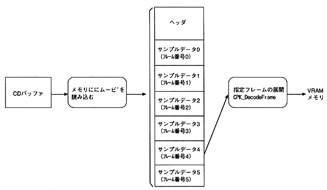

Return to previous page ｜ Return to menu ｜ Go to next page
-
3.5 Still image playback
- Movie data can be used as a still image by loading movie data into memory and expanding the specified frame (CPK_DecordeFrame function).

- Figure 3.8 Flow of still image playback
Caution - Cinepak compression with no sound should be applied to the movie for still images.
- The frame rate for Cinepak compression is arbitrary (it has no meaning).
- Never specify keyframes when compressing Cinepak.
- Movies for still images must all be loaded in memory. For full-screen frame sizes, a movie file of about 10-20 frames is appropriate.
Return to previous page ｜ Return to menu ｜ Go to next page